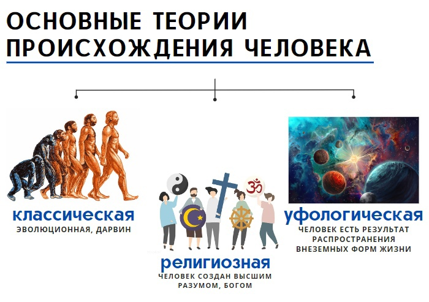
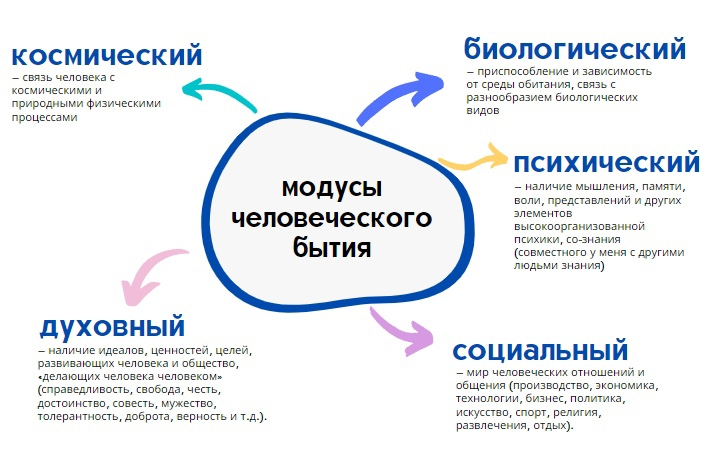
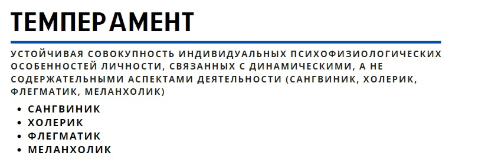

14. Проблема человека в философии. Основные концепции и направления исследования.
Человек обретает себя как личность, только теряя себя как биологическую особь. Это значит, что сущность человека - совокупность признаков, выделяющих человека из мира животных.
При этом снова можно вернуться к предыдущему вопросу о природе, говоря о том, что именно разум делает существование человека таким нестабильным и даже опасным (с точки зрения экологической проблематики). И если бы не разум, то человеку бы жилось куда лучше, ведь не надо было бы принимать никаких решений и нести за это ответственность. просто подчиняйся природным законам и рефлексам. Вот и вопрос – разум человека – это инструмент для чего, что он на самом деле с его помощью должен сделать, кто может подсказать? Человеку в этом плане одиноко, потому что никто ему не может кроме него самого дать ответ на этот вопрос, а ответ добывать приходится путем проб и ошибок. И что в человеке победит – эгоизм, лень, желание спрятаться, перенести ответственность или все же мужество стать тем, кем он может стать благодаря истинной силе своего разума и практикам самоограничения – вопрос пока остается открытым. Так вот, проблемой осмысления феномена человека (именно феномена, т.к. не совсем ясно, как это ни странно, что такое человек, ни с точки зрения биологического вида, а во всем комплексе его лучших и худших качеств) занимается такой раздел философии как философская антропология. Центральная проблема фил. антропологии – что есть человек. Определить, что он из себя представляет не так просто как кажется. Если мы говорим о наличии разума, как главном признаке человека, то тогда это означает, что, например, дети в раннем возрасте (или нездраво мыслящие старики) не могут быть признаны людьми, равно как и лица с особенностями развития. инвалиды. А как насчет эмбриона еще не родившегося человека в утробе матери, должны ли мы его рассматривать как человека или нет? От ответа на этот вопрос будет зависеть, например, будем ли мы судить за убийство при аборте или нет. И если преступник-серийный убийца все равно человек, то можем ли мы отнять у него жизнь, назначив смертную казнь? Стоит подумать. Так что вопрос даже не чисто философский, а еще и практический.
Таким образом, философская антропология стремится выработать нужное определение и описание человека, которая включала бы в себя важнейшие сущности и характеристики личности. Термин “философская антропология”, кстати, ввел Кант, как раздел философии, интерес кот. прикован к проблеме автономности человека. Неудивительно в этой связи, что свое рассмотрение познавательных возможностей человека Кант подытожил, казалось бы, не имеющей никакого отношения к познанию формулировкой т.н. «категорического императива» (см. вопрос №5 о немецкой классической философии), который описывает базовое правило поведения человека. Т.е. именно категорический императив это то, что делает человека человеком. Получается, что человек, это существо, способное делать выбор и прежде всего выбор между добром и злом. Ни одно другое существо в природе не анализирует на таком уровне себя и окружающий мир.
- Выявление сущности человека (в чем критерии «человечности», каков человек на самом деле, как его понимать и интерпретировать?)
- Установление конкретно-исторических форм активности человека (что он делает на протяжении различных этапов своей истории, почему он такой разный до неузнаваемости?)
- Описание различных исторических форм его культуры и бытия (каковы его достижения, как меняются его ценности, идеалы в процессе истории?)
- Определение места человека в мире и его отношения к миру (как человек понимает окружающий мир и свое место в этом мире? Человек это результат развития природы или он должен рассматриваться сам по себе?)
- Изучение перспектив развития сверхвозможностей и способностей человека (что человек он действительно может и как он должен развивать себя?)
- Выявление соотношения биологического и социального, индивидуального и общественного в человеке (чего в человеке больше: природного или культурного, индивидуального или коллективного? Как преодолеть животность, стадность и как в тоже время сделать разумную его часть эффективной и активной?)
- Выявление сущности личности и индивидуальности человека (что представляет собой личность и индивидуальность человека?)
- Интерпретация феномена человека в единстве его проявлений (что такое человек в целом?)
Важное для понимания человека понятие – антропогенез (от греч. anthropos - человек, genesis - развитие) - процесс эволюции предшественников современного человека, палеонтология человека. Также - наука, изучающая этот процесс.
Процесс становления человека – это социогенез (чел начинает развиваться на основе соц. деятельности и соц. отношений). В этом плане даже наличие мозга мало что значит. Он конечно важен, но если при полноценном мозге у человека не будет общения, воспитания и образования, то он будет немым и слабомыслящим (литературные примеры героев Тарзана, Маугли и зафиксированные аналогичные примеры в реальной жизни в связи с различным обстоятельствами). Т.е. человек есть результат труда (производства продуктов труда) и общественных отношений. Именно на этом настаивал, в частности Маркс в своей концепции исторического (диалектического) материализма (см. вопрос №6 о марксизме).
- Индивид – это человек как отдельный представитель человеческого рода, один из многих людей.
- Индивидуальность – это человек как носитель уникальных свойств, отличающих его от других индивидов (биологические – ДНК, отпечаток пальца, психические – характер, особенности мышления, интересы).
- Личность – это человек как ответственный субъект своей жизни и своих поступков, осознающий цели и смысл деятельности. Личность – социальное качество и черта человека, формирующееся и проявляющееся только в системе общественных отношений

15. Понятие сознания и его структура. Сознание и бессознательное. Проблема языка и искусственного интеллекта.
- Существует ли качественное отличие сознания от физических, материальных процессов и явлений? Если да, то в чем оно, ведь сказать, что сознание это просто физическая работа мозга мало что проясняет.
- Является ли сознание атрибутом человека или это явление надчеловеческое, космическое? Т.е. информация о мире, которой оперирует мозг, создана самим человеком или она независимо от человека всегда присутствовала в мире (информация об атомах, электронах, протонах и их свойствах это результат работы человеческого сознания или эта информация часть самого мира?)
- Как соотносятся между собой сознание и близкие ему реальности – психика, душа, духовное, идеальное? Это все одно и тоже? Если да, то почему было создано и используется столько разных понятий?
35. Человек как объект и предмет психологии
Объект психологии достаточно очевиден – это человек, его психические процессы, состояния и свойства. Его (т.е. объект психологии) можно рассматривать как в широком (человек, группа людей, общество в целом), так и в узком (психика как системное свойство высокоорганизованной материи, заключающееся в активном отражении объективного мира) смыслах. Еще более точной формулировкой будет выделение на основе объекта психологии, которым является, как уже было сказано, человек с его психическими процессами, также и предмета психологии, в качестве которого можно назвать собственно психику человека и различные проявления его психической деятельности. Таким образом, объект психологии – человек, предмет психологии – психика человека, а также основные законы ее формирования и функционирования.
Пожалуй, наиболее яркая особенность современной психологии – это чрезвычайная широта и многообразие подходов к исследованию феномена психики и тех аспектов, в которых оно изучается в рамках связей психологии с другими науками (социальная психология, экономическая психология, политическая психология и т.д.).
Далее можно см. вопр. № 14 и 15 об особенностях феномена человека и его сознания.
36.Человек как объект и предмет педагогики
Объектом педагогики является одна из разновидностей социальных взаимоотношений между людьми, а именно та их разновидность, которая обеспечивает развитие, совершенствование человека. Если, скажем, экономическая наука исследует коммуникации между людьми, складывающиеся в процессе производства ими материальных благ, а культурология изучает процессы производства духовных ценностей, то педагогика анализирует процесс совершенствования человека на основе накопленного людьми социального опыта, без чего невозможно любое производство, ни материальное, ни духовное, поскольку именно человек выступает в качестве субъекта любых социальных отношений.
Предметом педагогики как науки могут выступать педагогические явления, которые протекают в процессах функционирования и жизнедеятельности государства и общества, всех их сфер и структур, культурно-просветительных и образовательно-воспитательных учреждений, людей, их семей и существуют в виде педагогических закономерностей, факторов, механизмов образования, воспитания, обучения и развития личности.
Далее см. вопр. № 14 и 15 об особенностях человека и его сознания с учетом целей и задач педагогики, т.к. сознание человека надо развить, умениям научить, а знания передать. Все это достигается в процессе целенаправленной работы с человеком начиная с самых ранних этапов путем прохождения человека через различные социальные организации: ясли, детский сад, школа, институт, армия, работа и т.д. Значение педагогики, хоть речь при упоминании о ней и идет прежде всего о детях, имеет значение также и при обучении и повышении квалификации взрослых, т.к. педагогика исследует особенности восприятия информации и знаний в процеесе обучения различными категориями слушателей (в том числе и врослыми). Вобщем-то этим вопросам посвящен отдельный элемент педагогики – дидактика – раздел педагогики и теории образования, изучающий проблемы обучения. Раскрывает закономерности усвоения знаний, умений, навыков и формирования убеждений, определяет объём и структуру содержания образования. Основной вопрос дидактики формулируется по-разному. Одни исследователи связывают его с вопросом о содержании обучения и воспитания, другие с тем, «как протекает мышление учащихся в процессе изучения» конкретного предмета; третьи резюмируют его в двух вопросах «чему учить?» и «как учить?»
В целом педагогика – это процесс передачи человеку знаний. умений и навыков необходимых ему для полноценной жизнедеятельности в условиях современного ему общества, подготовка человека к самостоятельной жизни, развитие заложенных в нем, в том числе скрытых способностей, задатков и талантов.
37. Человек как индивид, индивидуальность, личность
Человека можно рассматривать с точки зрения различных уровней проявления его сущностных характеристик. В этой связи принято выделять для его описания такие категории как индивид, индивидуальность и личность.
Индивид - это социально-философская категория, в которой фиксируется отдельный представитель человеческого рода «homo sapiens». Т.е. индивид – отдельно взятый человек.
Индивидуальность – совокупность уникальных неповторимых черт индивида. Часть из этих черт имеет биологическую природу (внешность, набор ДНК, отпечатки пальцев), другие черты – личностно-социальную природу (черты характера, привычки, вкусы, интересы, манера общения и т.д.). Если первая группа черт формируется от рождения, то вторая складывается в процессе развития индивида, выступая способом его реагирования на те или иные факторы внешней среды, а также как результат самостановления человека.
Личность – это уже социокультурная сторона индивида, т.е. совокупность социально значимых качеств или черт, способствующих прогрессу общества и самого человека. В этом понятии отражается «включенность» человека в определенную систему социально общезначимых отношений, способность человека брать на себя ответственность за принятые решения и осуществленные действия, быть примером для других. Появление личности – это всегда результат социализации человека как на уровне онтогенеза (процесс индивидуального развития организма с момента его образования и до естественного завершения жизненного цикла), так и филогенеза (историческое развитие группы организмов, эволюция вида как такового). Поэтому понятие личность всегда выражает некоторую степень признания достижений индивида в его развитии с точки зрения общества.
Таким образом, личность – это продукт общественно-исторического и онтогенетического развития человека.
Можно сказать, что индивидом рождаются, индивидуальность формируют и развивают, личностью становятся.
В философии и психологии вопрос о том, что такое личность и как она может проявлять себя (положительно как «герой» или отрицательно, как «антигерой») всегда являлась одной из самых популярных тем. В русской религиозной философии, например, долго господствовало убеждение, что суть личности может быть раскрыта только через ее отношение к Богу. В западной философии в трактовке личности были представлены две основные противоположные позиции: биологизаторски-индивидуалистическая и структуралистическая. Приверженцы 1-й отрицали социальную привязанность личности, объясняя проявления личности исключительно действием наследственности и нейрофизических структур организма. Приверженцы 2-й, признавая социальную обусловленность личности, сводили социум в большей степени к неким безличным неизменным структурам общества, формализациям проявлений человеческого духа в нем (т.е. существование влияющих на личность безличных социальных институтов – государство, семья, мораль, религия, наука и т.д.).
- по К. Марксу: формационная (историческая) и классовая (профессиональная) принадлежность личности могут быть включены в три типа социальных отношений - личной зависимости, личной независимости и свободной индивидуальности;
- по М. Веберу: за основу типизации берется специфика социального действия, более конкретно – степень его рациональности в тех или иных действиях субъекта
- по Э. Фромму: анализируя историю человечества можно выделить несколько типов личности (типов социального характера как господствующей формы связи индивида и социума, которая присуща большинству членов одной и той же культуры в конкретном историческом периоде) – рецептивный (пассивный), эксплуататорский, накопительский, рыночный
- по К. Юнгу: экстравертный тип и интровертный тип личности с преобладанием одной из основных психических функций –мышления, чувства, ощущения или интуиции
- по Гиппократу и Галену: холерик, флегматик, меланхолик, сангвиник
38. Понятие личности и ее структура
Личность – продукт общественно-исторического и онтогенетического развития человека.
Структура личности представляет собой набор неизменных и стабильных свойств, которые проявляются индивидами в самых разнообразных ситуациях. В психологии принято делить такие свойства на три класса: черты характера, способности и мотивы. В каждой структуре психики индивида проявляются как достоинства, так недостатки темперамента, которые компенсируются основными достоинствами характера каждой личности. Личностью является человек, который приобрел определенный набор социальных качеств. В число личностных качеств попадают и психологические, которые характеризуют характер личности, а также ее отношение к людям.
Современная психология характеризует личность, как социально-психологическое образование, сформированное в результате жизнедеятельности в обществе. Соответственно, до рождения у каждого индивида отсутствуют личностные качества. Каждый человек индивидуален, поскольку обладает рядом индивидуальных свойств, присутствующих только ему.
Важно отметить, что личность всегда является продуктом не только своих действий, но и тех общественно-экономических отношений, в которых участвует. Таким образом, изучение личности по своей сути – это всегда историческое исследование процесса ее становления при определенных социальных условиях, определенном общественном строе. Иными словами, любой человек – это всегда «дитя» своего времени с типичным набором знаний, установок мышления и деятельности.
Становление личности – это прямой процесс социализации человека, направленный на освоение им важнейших общественных навыков, проявляемый в определенных обстоятельствах жизнедеятельности каждого человека. Особо четко выделяют две различные структуры личности – социальную и психологическую. Рассмотрим каждую из них более подробно.
Самоактуализирующаяся (реализующая себя) личность характеризуется способностью хорошо ориентироваться в действительности и активно воспринимать окружающий мир, проявлять не только системность и устойчивость, но и непосредственность и спонтанность в поступках и выражении собственных чувств и мыслей, принимать себя и окружающих в их различных проявлениях, самостоятельно развивать свои способности и т.д.
Структуру личности рассматривают по-разному. Одни считают, что в структуре личности целесообразно рассматривать только психологические ее компоненты (познавательные, эмоционально-волевые, направленность личности), а другие авторы выделяют в ней и биологические аспекты (типологические особенности нервной системы, возрастные изменения в организме, пол), которые нельзя игнорировать в процессе воспитания личности.
Однако, противопоставлять биологическое социальному в личности нельзя. Природные черты существуют в структуре личности как социально обусловленные ее элементы. Биологическое и социальное в структуре личности создают единство и взаимодействуют между собой.
В наиболее широком смысле в структуре личности различают типичное и индивидуальное.
Типичное – это то наиболее общее, что свойственно каждому человеку и характеризует любую личность вообще: ее сознание, активность, ум и эмоционально-волевые проявления и т.п., то есть то, чем один человек похож на других людей.
Индивидуальное – это то, что характеризует отдельного человека: его физические и психологические особенности, направленность развития, способности, черты характера и т.п., то есть то, чем один человек отличается от другого
39. Круги бытия человека. Единство биологического, психического и социального в человеке
Биосоциодуховная сущность человека проявляется в том, что он является комплексным и разносторонним явлением, активным субъектом, разносторонней, духовно богатой и гармонично развитой единицей (в большинстве случаев), связанной с обществом как с целым. Иными словами, человек это одновременно 1) Биологический организм, 2) Социальная единица, 3)Духовное существо. Или, говоря иначе: человек - это био-социо-духовно-космо-творческое существо. Эта формула наиболее полно описывает единство биологического, психического, социального и даже иного в человеке.
- 1. биологически человек не может родить себя сам, для его появления необходимы другие люди, родители, социум;
- вскормить и взрастить себя сам человек не может, для заботы о нем, особенно на ранних этапах жизни, также нужны другие люди;
- даже при наличии питания и благоприятной среды (еда, сон, удовлетворение биологических надобностей) человек не сможет полноценно развиваться без общения с другими людьми, представляющими предыдущие поколения, т.к. через это общение у него развивается психика, формируется речь и мышление;
- все важнейшие знания о мире даются человеку в процессе обучения и воспитания другими людьми, обществом, т.к. сам человек вывести самостоятельно все эти знания о мире из своего чрезвычайно ограниченного личного опыта никак не может;
- в процессе дальнейшей жизни большинство необходимых для себя благ человек получает благодаря взаимодействию с другими людьми и обмену с ними результатами своего труда, т.к. сам человек полностью покрывать свои нужды, производить все, что ему нужно для жизни, не в состоянии, обмен дает намного больше, чем человек может сделать единолично сам.
Духовность – важнейшая характеристика человечности (как базового, комплексного свойства человека).
В марксизме духовность ассоциируется, например, с идеологией общества. Общество задает базовое понимание важнейших для человека ценностей и правил жизни, имеющих именно духовную, а не материальную природу. Т.е. ценности и правила эти существуют в умах у людей, а не в самой физической природе.
Что это значит для конкретного человека? Для личности часто утрата или отсутствие справедливости, свободы и чести, совести, мужества, толерантности, доброты, верности идеалам означает по сути духовную смерть. Психологи отмечают, что при духовной смерти человек замыкается в себе, испытывает негативные чувства и эмоции, страдает. Тогда он закрыт для этических, эстетических, религиозных и прочих возможностей развития. Получается, что физически человек как бы живет, а духовно страдает и как будто бы не живет полноценной жизнью.
Маркс считал, что сущность человека не есть что-то абстрактное, трудноуловимое, она есть, прежде всего, совокупность общественных отношений, без которых человек не может жить. А поскольку человек реализует свою сущность через практическую (трудовую) деятельность, т.к. именно труд, работа есть основа его существования, то и социальные связи человека не есть нечто неизменное, они меняются соразмерно его практической деятельности.
- биологизация – сведение природы человека только к биологическим процессам;
- социологизация – игнорирование природных предпосылок человеческого существа и абсолютизация социальных факторов в природе человека.
Конечность человеческого бытия – естественный закон природы. Что не имеет смерти, не имеет и рождения. Боязнь смерти приближает смерть. Эпикур призывал не бояться смерти: если человек живет, то смерти нет, если смерть наступила, то его уже нет. А Спиноза советовал лучше думать о жизни, чем о смерти. В качестве компенсации за страх перед смертью придумано немало мифологем: перевоплощение души (буддизм), бессмертие души (христианство).
Реальное, немифологическое бессмертие состоит в том, что человек умирает физически, но не умирает социально, духовно. Он остается в своих делах, творчестве, памяти людей. В определенном смысле как генотип он продолжает жить в своих детях.
40. Психические свойства личности: темперамент, характер, способности
Темперамент – устойчивая совокупность индивидуальных психофизиологических особенностей личности, связанных с динамическими, а не содержательными аспектами деятельности (сангвиник, холерик, флегматик, меланхолик) Тип темперамента – врожденное свойство, но оно может несколько меняться под влиянием условий жизни или изменений, происходящих в организме. Темперамент является биологическим фундаментом, на котором формируется личность. Темперамент – врожденные особенности индивида, проявляющиеся в интенсивности, темпе и ритме протекания психических процессов и состояний.
Темперамент составляет основу формирования и развития характера.
Характер – это совокупность устойчивых черт личности, определяющих отношение человека к другим людям, себе, деятельности, окружающему миру. Он проявляется в манере поведения человека, способах реагирования на действия и поступки других людей, манере общения, отношении к деятельности и т. д. Характер – и предпосылка, и результат поведения человека, т.е. обусловливая поведение человека, он же в поведении индивида и формируется, а затем и закрепляется.
Способности – это формирующиеся в деятельности на основе предварительных задатков и склонностей человека его индивидуально-типологические особенности в достижении скорейшего и наибольшего результата в чем-либо, самореализации в некоторой конкретной предметной области работы и деятельности, отличающие одного человека от другого. От способностей в дальнейшем зависит успешность трудовой и творческой деятельности человека.
41. Психические процессы: эмоциональные, волевые, когнитивно-интеллектуальные
Психические процессы - это способ существования психики. Психика формируется в ходе взаимодействия индивида со средой и, следовательно, должна рассматриваться в динамике, в действии, в развитии. Психические процессы включены в более сложные виды психической деятельности.
Разнообразие типов психических процессов и которые зачастую рассматриваются человеком как единое, целостное восприятие окружающей реальности и себя самого указывают на наличие различных способов работы с ними. Понимание особенностей протекания каждого из типов психических процессов является основой для эффективного самоуправления.
42. Психические состояния: настроение, эйфория, вдохновение, стресс, фрустрация, депрессия и др.
- уровню и форме эмоциональности (например, наиболее эмоциональные: стыд печаль, агрессивность, радость и др.)
- уровню интенсивности (например, активационные – показывают включенность индивида в ситуацию или отчужденность от нее)
- уровню психофизиологического ресурса (например, тонические – бодрствование, монотония и психическое пресыщение, утомление и переутомление, сонливость и сон.
- уровню психического напряжения (например, тензионные (от англ. tension – напряжение) состояния, показывающие, в какой степени человеку для выбора того или иного поведения требуется приложить волевые усилия)
- продолжительности состояния (например, временные и длительные)
- направленности состояния (например, благоприятные, неблагоприятные).
Также часто выделяется такое понятие, связанное с психическими состояниями, как настроение – внутреннее продолжительное эмоциональное состояние человека. наблюдаемое в данный момент времени.
эйфория - (от греч. εὐφορία - «плодовитость», буквально «хорошо несущая») – положительно окрашенный аффект или эмоция. Ощущается как очень мощное, внезапное, всезаполняющее чувство счастья, восторга.
вдохновение - особое состояние человека, которое характеризуется высокой производительностью, огромным подъёмом и концентрацией сил человека, желанием реализовать что-либо.
стресс - (от англ. stress «нагрузка, напряжение») – совокупность неспецифических адаптационных (нормальных) реакций организма на воздействие различных неблагоприятных факторов – стрессоров (физических или психологических), нарушающее его саморегуляцию (гомеостаз), а также соответствующее состояние нервной системы организма или организма в целом).
фрустрация - (от лат. frustratio – «расстройство планов», «уничтожение замыслов») – психическое состояние, возникающее в ситуации реальной или предполагаемой невозможности удовлетворения тех или иных потребностей, или, проще говоря, в ситуации несоответствия желаний имеющимся возможностям.
депрессия - (от лат. deprimo «давить», «подавить») – психическое состояние, относящееся к типу расстройств, основными признаками которого являются сниженное настроение и снижение или утрата способности получать удовольствие (ангедония).
агрессия - (от лат. aggressiō «нападение») – мотивированное или немотивированное деструктивное поведение, противоречащее нормам сосуществования людей, наносящее вред объектам нападения, приносящее физический, моральный ущерб людям или вызывающее у них психологический дискомфорт.
раздражение - неприятное (негативное) психическое состояние, характеризующееся такими эффектами, как повышенная нервозность и отвлечение от своего сознательного мышления. Может привести к таким эмоциям, как разочарование и гнев. Свойство человека быть легко раздраженным называется раздражимостью.
монотония - это функциональное состояние сниженной работоспособности, возникающее в ситуациях однообразной работы с частым повторением стереотипных действий в обыденной внешней среде. Может сопровождаться переживаниями скуки, апатии, сонливостью и желанием сменить вид деятельности.
релаксация - (от лат. relaxatio «ослабление, расслабление») – временное снижение тонуса организма вследствие расслабления с целью последующего восстановления сил. Релаксация может быть достигнута в результате применения специальных психофизиологических техник, физиотерапии и лекарственных препаратов. Релаксация способствует снятию психического напряжения, из-за чего широко применяется в психотерапии, гипнозе и самогипнозе, йоге и многих оздоровительных системах.
Таким образом, психическое состояние – один из возможных режимов жизнедеятельности человека, на физиологическом уровне отличающийся определенными энергетическими характеристиками организма, а на психологическом уровне – системой психологических фильтров, обеспечивающих специфическое восприятие окружающего мира.
43. Сущность и типы мышления. Роль речи и языка в мышлении
Мышление – это процесс обобщенного и опосредованного отражения существенных свойств предметов и явлений действительности. Мышление тесно связанно со всеми психическими процессами, особенно с памятью.
Мышление субъективно и индивидуально, потому что мыслит, конкретная личность с присущими ей индивидуальными особенностями. Мышление является процессом решения задач, в том числе процессом реализации и регулирования человеческой деятельности и поведения.
Мыслительные операции: анализ, синтез, сравнение, обобщение, абстракция, конкретизация. Ведущие – анализ и синтез.
Анализ - это мысленное разделение предметов и явлений на части.
Синтез - это мысленное объединение частей или свойств в единое целое.
Сравнение - это сопоставление предметов и явлений, нахождение сходства и различий между ними.
Обобщение - мысленное объединение предметов и явлений, по их общим и существенных признакам.
Абстракция - мысленное отвлечение от несущественных признаков, с одновременным выделением существенных.
Конкретизация - это мысль о частном, которое соответствует определённому общему.
Программной основой мышления является язык и речь человека. Язык представляет собой организованную структуру знаков и символов, подчиняющуюся некоторым правилам и законам. Слова, которые мы используем в речи, отражают логику мышления человека и общества в целом. Система символов языка человека имеет относительную стабильность, т.к. язык передается из поколения в поколение в виде устной или письменной формы. Он не принадлежит ни одному из носителей языка, хотя каждый в некотором смысле обладает им. Язык – это продукт социальной договоренности и исторического развития общества. В процессе мышления язык задействован как инструмент, который закрепляет смысл значимого для человека объекта, явления, процесса либо отражения их свойств. Мы не можем рассматривать мышление и язык как тождественные явления, но они очень близки. Язык сам по себе представляет собой единство формы и содержания результатов (продуктов) мышления.
Важно отметить, что при отсутствии развития у человека языка развитие мышления также затормаживается, т.к. фактически язык выступает инструментом (средством) мышления, значение каждого используемого слова в этом плане – это, как было сказано, фиксация смыслов, идей и ключевой информации об окружающем мире и себе самом, с которыми затем будет работать мышление. Без языка мышление это как компьютер без операционной системы.
44. Типы и формы мышления. Единство чувственного и логического мышления
Мышление проявляет себя в познавательной деятельности человека, осмыслении и анализе реальности. Поэтому целесообразно раскрывать сущность мышления используя понятие познания в том числе.
В самом общем плане познавательный процесс осуществляется на трех взаимосвязанных уровнях: чувственном, рациональном (логическом) и интуитивном. Оно имеет три основных формы: ощущение, восприятие и представление. В ощущениях фиксируются отдельные признаки вещей (зрительные, слуховые, тактильные и т.п. – красный, тихий, шершавый, высокий и др.). Восприятие обеспечивает формирование в сознании человека целостного образа предмета (красная роза, приятная мелодия, вкусный суп и т.д.). Обратим внимание: ощущение и восприятие актуализируются в момент непосредственного контакта органов чувств с предметами и явлениями окружающей среды. А вот представление – это такая форма чувственного познания, которая «работает» без такого контакта. Это происходит благодаря памяти, позволяющей воспроизводить в сознании опыт прошлого, и которая обеспечивает непрерывность самосознания человека, его способность к самоидентификации. Есть у представления и еще один важный механизм, благодаря которому оказывается возможным моделировать будущее и реконструировать настоящее. Это воображение.
Рациональное мышление представляет собой своего рода «надстройку» над чувственным познанием. Причем в данном случае речь идет не о профанном разуме, который есть у каждого человеческого существа, а о специфически подготовленном и образованном разуме. Разум, который способен отличить мнение от истины, и который знает, каким образом ее можно обрести. Так вот, рациональное познание (т.е. функционирование специально подготовленного, образованного разума) представляет собой процесс опосредованного познания действительности. Его рабочими инструментами являются логика и абстракции (понятия) различных уровней обобщения. Общими формамилогического мышления являются понятие, суждение и умозаключение. А результатом деятельности становится постижение глубинных, сущностных характеристик вещей, их связей и отношений, которые фиксируются в категориях, теориях, гипотезах теоретического разума.